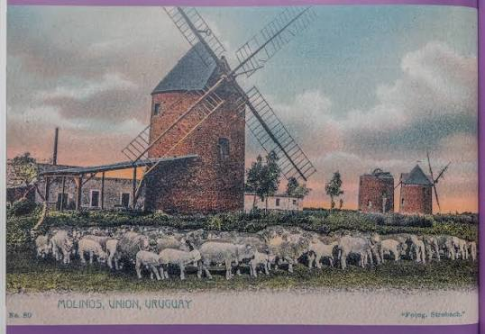

Sus comienzos

El Molino del Galgo fue construido en 1832 por José Pratt, un inmigrante catalán. En sus comienzos funcionaba como molino de viento y se utilizaba para moler trigo y producir harina. Con el crecimiento de la ciudad y los cambios en la actividad industrial, dejó de funcionar y tuvo diferentes usos a lo largo de los años.